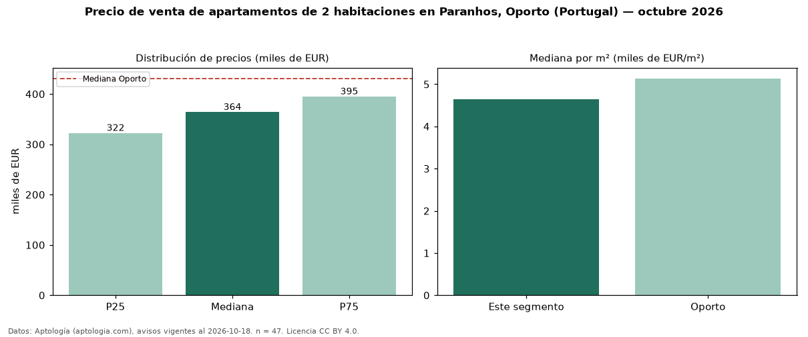

Precio de venta de apartamentos de 2 habitaciones en Paranhos, Oporto (Portugal) — octubre 2026
En Paranhos, Oporto (Portugal), la mediana de precio de venta de apartamentos de 2 habitaciones es EUR 364.000, según 47 avisos vigentes. Eso es 16 % por debajo de la mediana de Oporto para apartamentos de 2 habitaciones (EUR 430.875). Por metro cuadrado, la mediana es EUR 4.639/m² (n = 44 avisos con área), 10 % por debajo de Oporto (EUR 5.137/m²). Son 48 % de los 97 avisos de apartamentos en venta de la zona, cuya mediana general es EUR 325.000 (+12 %). El área mediana anunciada es 81 m². 70 % de los avisos con el dato declara parqueadero o cochera. La mitad central de los avisos va de EUR 322.500 a EUR 394.938 (razón 1,2), una dispersión baja. Datos: Aptología (aptologia.com), CC BY 4.0 — https://www.aptologia.com/pt/venda/porto/paranhos. Archivos: PDF, CSV con las cifras y gráfica PNG.

| Avisos únicos | 47 |
|---|---|
| Percentil 25 | COP 322.500 |
| Mediana | COP 364.000 |
| Percentil 75 | COP 394.937 |
| Mediana por m² | COP 4.638 |
Fuente: avisos vigentes de portales inmobiliarios recopilados por Aptología, deduplicados (mínimo 30 avisos únicos por celda). Precios pedidos, no cerrados. Fecha: 2026-10-18.